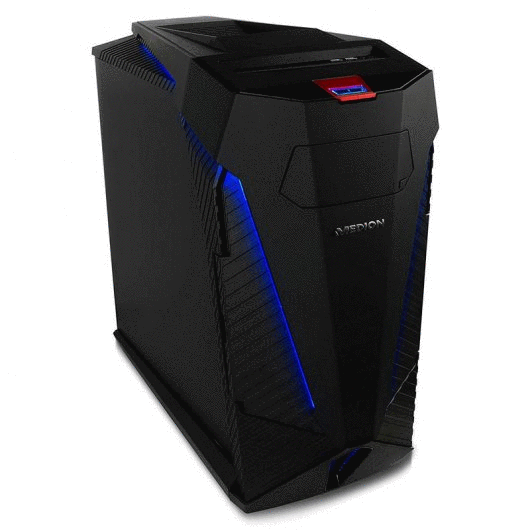
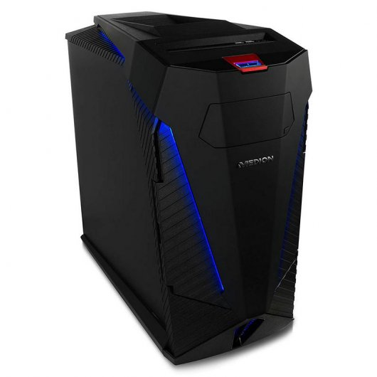
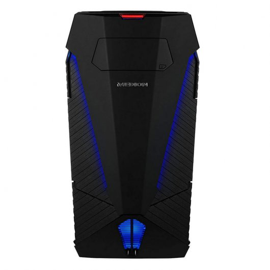
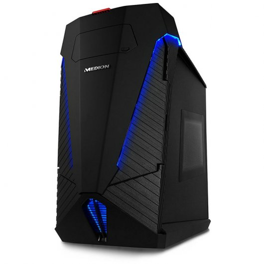
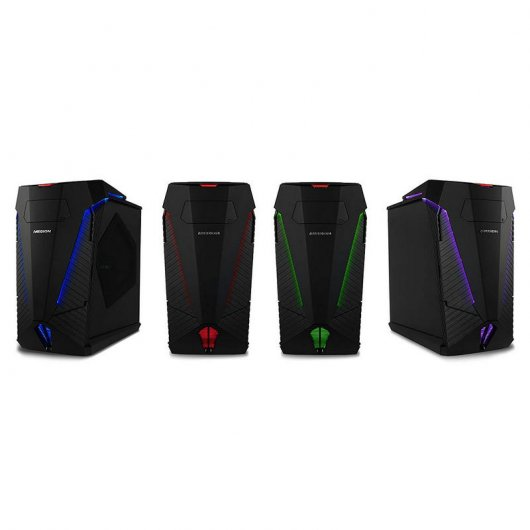

FUTURETECH STORE |
|      |
Medion Erazer X77
3272,73€
El modelo tope de gama en sobremesa de MEDION ofrece un diseño gaming con chasis FULL ATX de metal acabado a mano y lacado en color negro. Está acompañado de un optimizado sistema de ventilación y siete colores de iluminación. Incluye además un botón para overclocking en la parte superior.
Características
Procesador Intel® Core™ i9-7900X Velocidad del Procesador 3,3 GHz, hasta 4,3 GHz, 13,75 MB Intel® Smart Cache, Tecnología Intel® Turbo-Boost 3.0
MSI® X299 Gaming Pro Carbon ac Mainboard
Memoria: 16 GB DDR4-2666 HyperX® Fury (2 x 8 GB)
Tarjeta gráfica NVIDIA® GeForce® GTX 1080 con 8 GB de memoria gráfica GDDR5X, 3 x DisplayPort, 1 x HDMI®, 1x Dual Link DVI
1 x Marco de cambio de disco duro Hot Swap integrado. Capacidad de memoria de disco duro ampliable con todos los discos duros internos usuales de 8,89 cm (3,5").
Sonido Audio con 8 canales discretos
Alphacool Eisbaer 120 water cooling
Especificaciones
Procesador Intel® Core™ i9-7900X Velocidad del Procesador 3,3 GHz, hasta 4,3 GHz,13,75 MB Intel® Smart Cache, Tecnología Intel® Turbo-Boost 3.0
Memoria RAM 16 GB DDR4-2666 HyperX® Fury (2 x 8 GB)
Almacenamiento 256 GB Intel® PCIe SSD + Disco duro de 2 TB (2.000 GB)
Unidad óptica Grabadora DVD/CD multiestándar
Controlador gráfico NVIDIA® GeForce® GTX 1080 con 8 GB de memoria gráfica GDDR5X, 3 x DisplayPort, 1 x HDMI®, 1x Dual Link DVI
Conectividad
Intel® I219-V Gigabit LAN
Intel® Wireless-AC 8265 & Bluetooth 4.2
Conexiones
Conexiones en el frontal:
2 x USB 3.0,
1 x Entrada de micrófono,
1 x Auriculares
Conexiones en la parte posterior:
4 x USB 3.0,
1 x USB 3.1 Type-A,
1 x USB 3.1 Type-C,
3 x USB 2.0,
1 x PS/2,
1 x LAN (RJ-45)
Conexiones de audio:
1 x Optical S/PDIF OUT,
5 x OFC audio jacks
Lector de tarjetas multi para todas las tarjetas de memoria habituales
Sistema operativo Windows 10 Home 64-Bit
Color Negro
|


{kind=link}
{kind=link}
{kind=link}
{kind=link}